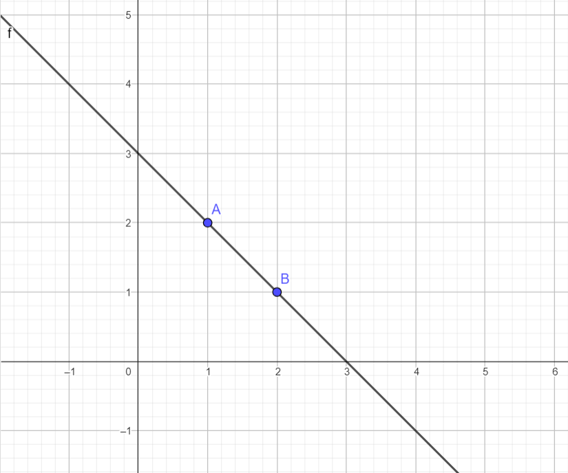
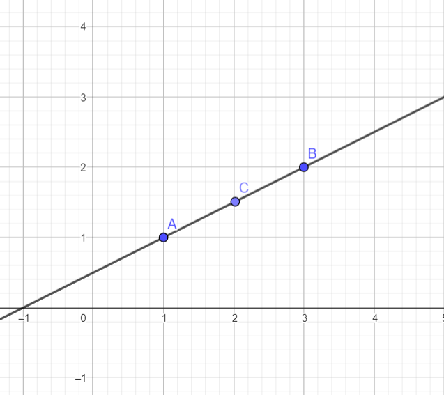

Alapok
Bevezető
A síkmértan megértéséhez elengedhetetlen néhány alapfogalom ismerete. Az első fejezetben a pont, egyenes, szög és sík fogalmával fogunk foglalkozni.
Pont
A pont egy olyan geometriai alapfogalom, amelynek nincs kiterjedése, sem hossza, sem szélessége, sem magassága. Csak a helyzetét határozza meg a térben vagy a síkban. A pontokat általában nagybetűkkel jelöljük. Az ábrán A és B pontok láthatók, melyeknek koordinátái (1,2) és (2,1).
Egyenes
Az egyenest kolineáris pontok végtelen halmaza alkotja. A síkmértanban különbséget teszünk az egyenes, félegyenes és szakasz fogalma között.
Egyenes
Egy olyan végtelen hosszú vonal, amely két ponton átmenve azokat összeköti, és minden pontja egy vonal mentén helyezkedik el. Az egyenesnek nincsen kezdő- és végpontja, mindkét irányban végtelenbe nyúlik. Matematikai ábrázolásban gyakran kisbetűkkel jelölik. Az ábrán a f egyenes áthalad az A és B pontokon.
Félegyenes
Egy egyenes egy része, amely egy adott pontból (kezdőpont) indul és egy irányba végtelenbe nyúlik. A félegyenesnek van kezdőpontja, de nincs végpontja. Matematikailag gyakran a kezdőpont és egy másik rajta levő pont betűjével jelöljük. Az ábrán az f félegyenesnek az A a kezdőpontja, a B pont pedig rajta van.
Szakasz
Az egyenes egy véges része, amely két adott pont (végpontok) között helyezkedik el. A szakasznak van kezdő- és végpontja, és minden pontja ezen két végpont között található. Matematikailag gyakran a két végpont betűjével. Az ábrán az f szakasz végpontjai az A és B.
Szög
A szög az euklideszi geometriában két, egy közös pontból kiinduló félegyenes által bezárt síkidom. Ez a közös pont a szög csúcsa, a félegyenesek pedig a szög szárai. A szögeket mértékegységekkel, például fokokkal (°) vagy radiánokkal (rad) mérjük.
Osztályozás
Két egyenes valójában két szöget határoz meg, melyek összege 360 fok, ám megeggyezés alapján mindig a kisebbet tekintjük, ezért a továbbiakban nem is foglalkozunk a a 180 foknál nagyobb szögekkel.
Nullszög
Egy olyan szög amelynek a mértéke 0 fok. Az ábrán látható A,B és C pontok nullszöget zárnak be, vagyis kolineárisak.
Hegyesszög
Olyan szög, amelynek a mértéke 0 és 90 fok között van. Az Ábrán látható AB és A'B félegyenesek 0 fokos szögek 0 fokos szöget zárnak be.
Derékszög
A derékszög olyan szög, amely pontosan 90 fokot zár be. Az ábrán látható AB és AC félegyenesek merőlegesek egymásra, vagyis derékszöget alokotnak.

Tompaszög
A Tompaszög olyan szög melynek mértéke 90 és 180 fok között mozog. Az ábrán látható AB és BA' félegyenesek 90 fokos szöget zárnak be.
Sík
A sík A sík egy végtelen, kétdimenziós felület, amely minden irányban kiterjed. Minden egyenes, amely két pontját összeköti, teljes egészében a síkban található. Az ábrán látható A,B és C pontok az X és Y tengely által meghatározott síkban vannak.